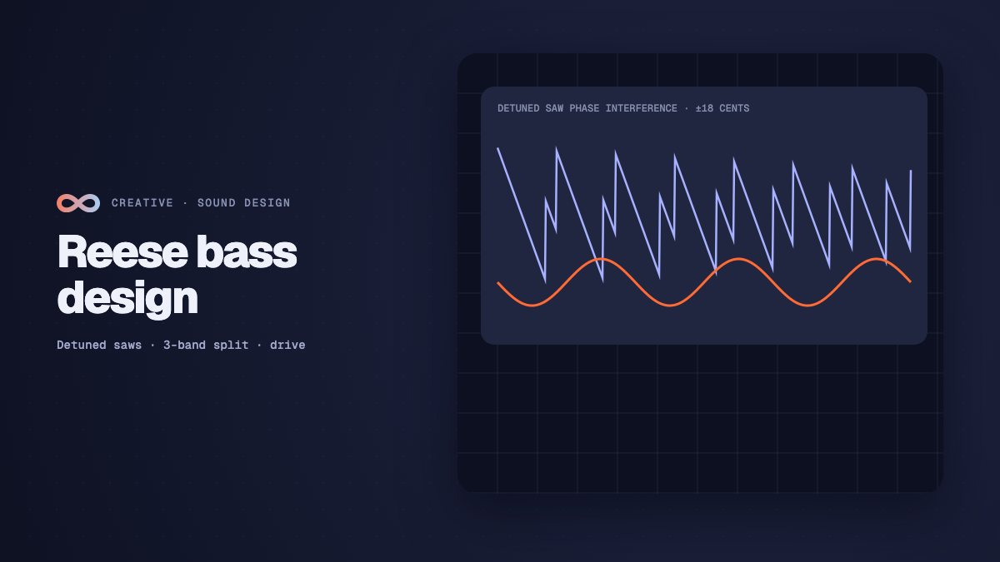

Creative
Drum and bass Reese bass sound design in modular synthesisers
Master drum and bass Reese bass sound design in modular synthesisers: detuned saw phase movement, multi-band filter splits, distortion, and audio-reactive visuals.

on this page
- Acoustic foundations of the Reese bass
- Dual oscillator core in the Analog node
- Multi-band crossover: isolating the sub fundamental
- Nonlinear waveshaping and harmonic saturation
- Formant sweeps with modulated twin notch filters
- Stereo widening and mono compatibility on club systems
- Audio-reactive visual modulation on the unified canvas
- Summary parameter reference and routing checklist
- Engineering limits and practical considerations
Few sounds define underground electronic music as completely as the Reese bass. Originating on the Casio CZ-1 synthesiser under Kevin Saunderson's Reese moniker in 1988, the patch became the sonic cornerstone of jungle, drum and bass, techstep, and neurofunk. Producers from Renegade Soundwave to Ed Rush, Optical, Dillinja, and Noisia transformed what began as a simple pair of detuned oscillators into an evolving, multi-band instrument of pressure and texture.
Achieving authentic drum and bass Reese bass sound design requires understanding the acoustic physics of phase cancellation, harmonic saturation, and multi-band routing. In conventional digital audio workstations, setting up this architecture requires dozens of plugin windows, complex auxiliary buses, and clunky phase-alignment utilities.
In Infinite, the entire signal path lives directly on a unified node canvas. You can route audio, control voltages, and real-time graphics without latency penalties or auxiliary routing bottlenecks. Here is a step-by-step engineering breakdown of how to construct a professional, club-ready Reese bass from scratch.

Acoustic foundations of the Reese bass
At its core, a Reese bass is generated by the physical phenomenon of acoustic beating. When two periodic waveforms with nearly identical frequencies f_1 and f_2 are summed together, their phase relationship continuously shifts between constructive interference and destructive interference.
The resulting composite waveform pulsates at a beat frequency determined by the absolute difference between the two oscillators:
f_beat = |f_1 - f_2|If an oscillator plays an F1 note at 43.65 Hz and a second oscillator is detuned sharp by +9 cents (approximately 43.88 Hz), the beat frequency is:
f_beat = |43.88 - 43.65| = 0.23 HzThis 0.23 Hz differential produces a slow, hypnotic swelling cycle every 4.3 seconds. If the detune is widened to +25 cents, the beating accelerates into an aggressive growl.
The sub-bass phase cancellation trap
While acoustic beating sounds rich across the midrange, it introduces a severe physical defect in the sub-bass register below 90 Hz. When the two detuned saw waves drift into anti-phase (180 degrees apart), their fundamental frequencies cancel each other out completely.
On a large club sound system, this cancellation causes the low end to collapse periodically. The dancefloor feels a momentary drop in kinetic weight every time the waveforms cross zero. To build a Reese bass that translates powerfully across large subwoofers, you must decouple the sub fundamental from the detuned mid band using multi-band frequency splitting.
Dual oscillator core in the Analog node
The foundation of the patch begins with the Analog node. Rather than using pre-recorded wavetables or sample loops, Infinite generates anti-aliased analogue waveforms in real time using band-limited step correction.
[ Note In ] ---> pitch ---> [ Analog Node ]Oscillator configuration
- Oscillator 1: Set the waveform to Sawtooth. Set the octave to 0 and the coarse pitch to 0 semitones. This oscillator serves as our pitch reference.
- Oscillator 2: Set the waveform to Sawtooth. Set the coarse pitch to 0 semitones and the fine tune control to +8.5 cents. The subtle pitch disparity creates our primary acoustic beating.
- Sub oscillator: Configure the internal sub oscillator to a pure Sine wave, pitched exactly -1 octave down (-12 semitones). We will extract this pure sine during the band-split phase to serve as our mono sub anchor.
- Phase mode: Ensure phase sync is disabled so both oscillators run free. Synchronising oscillator phase on every note-on event produces an artificial, static attack. Free-running oscillators guarantee that every note triggers with a slightly different phase alignment, mimicking vintage analogue hardware.
- Glide and legato: Set polyphony to Mono Legato and dial in a glide time between 35 ms and 55 ms. Smooth pitch portamento between notes is essential for drum and bass basslines.
You can inspect pre-configured synthesiser templates in the Infinite Library to see how monophonic glide circuits are wired into note graphs.
Multi-band crossover: isolating the sub fundamental
To resolve the phase cancellation dilemma, we split the output of the Analog node into two discrete frequency bands at 110 Hz:
- Sub band (20 Hz to 110 Hz): Contains only the solid, monophonic fundamental frequency. This band bypasses all distortion, modulation, and spatial effects to remain completely mono and phase-stable.
- Grit band (110 Hz to 20 kHz): Contains the rich detuned saw harmonics. This band is aggressively saturated, filtered, and widened.
We implement this split using two Filter nodes operating in parallel.
+---> [ Filter: Lowpass 110 Hz ] ---> (Sub Bus: Mono)
|
[ Analog Output ] ---+
|
+---> [ Filter: Highpass 110 Hz ] ---> [ Distortion Node ]Configuring the crossover filters
- Sub filter: Set filter topology to 4-pole Butterworth Lowpass (24 dB per octave rolloff). Set the cutoff frequency to 110 Hz with zero resonance (Q = 0.707).
- Grit filter: Set filter topology to 4-pole Butterworth Highpass (24 dB per octave rolloff). Set the cutoff frequency identically to 110 Hz with zero resonance (Q = 0.707).
Because both filters share matching 24 dB per octave Butterworth responses at identical corner frequencies, their phase shifts align smoothly at the crossover point without phase cancellation or comb-filter notches across the 110 Hz boundary.
Nonlinear waveshaping and harmonic saturation
With the sub fundamental safely isolated, we can subject the highpassed grit band to heavy nonlinear processing without compromising the low end.
We patch the highpass output directly into the Distortion node. In drum and bass production, clean saw waves sound thin and dated. Squeezing them through asymmetric clipping generates complex odd and even harmonics that fill out the 300 Hz to 4 kHz frequency band.
The mathematics of asymmetric saturation
A standard symmetric waveshaper clips positive and negative signal peaks identically:
f(x) = tanh(k * x)Symmetric clipping generates only odd harmonics (3rd, 5th, 7th), resulting in a hollow, square-wave tonality. To produce the snarling, guttural character characteristic of neurofunk, we introduce a DC bias offset before saturation. This asymmetry generates prominent even harmonics (2nd, 4th, 6th):
f(x) = tanh(k * (x + bias)) - tanh(k * bias)Parameter settings in the Distortion node
- Drive: Increase drive to +14 dB to push the detuned saw beating into hard saturation. As the beating waveforms periodically crest, the distortion unit saturates them into dense square-like plateaus.
- Mode: Select Asymmetric Tube Fold.
- Bias: Set bias to +0.22. This introduces even-order harmonic sweetness.
- Oversampling: Engage 4x oversampling. Hard nonlinear distortion creates harmonic energy that can exceed the Nyquist frequency (24 kHz at a 48 kHz sample rate). 4x oversampling suppresses aliasing artifacts, preserving high-frequency clarity.
- Post-tilt equaliser: Add a gentle +2.5 dB high-shelf boost starting at 2.2 kHz to compensate for high-frequency energy lost during saturation.
For a deeper exploration of custom mathematical waveshaping kernels, consult our technical guide on per-sample DSP audio kernels in Field language.
Formant sweeps with modulated twin notch filters
The signature vocal quality of modern Reese basses is created by sweeping notch and comb filters across the saturated spectrum. When an audio signal with dense harmonic content passes through narrow rejection notches, human ears perceive vowel-like vocal formants (such as "ow", "ah", and "ee").
We insert a second Filter node after the distortion stage, configured in twin-notch rejection mode.
[ Distortion Out ] ---> [ Filter: Twin Notch ] ---> [ Chorus Node ]
^
|
[ Modulator LFO ]Wiring the modulator LFO
To bring the sound to life, we patch a Modulator node to animate the filter cutoff frequency:
- Modulator shape: Select a morphed triangle-to-sine wave or a slow chaotic random walk.
- Sync rate: Synchronise the LFO to the global transport, selecting 1/2 bar or 1/4 dotted divisions.
- Slew rate: Set a 12 ms slew filter on the LFO output to prevent abrupt parameter jumps from causing audible clicks.
- Modulation depth: Map the LFO output to the notch filter cutoff parameter with a modulation depth of 65 percent. As the bassline sustains, the notches sweep dynamically between 400 Hz and 3.2 kHz, producing the iconic moving vowel resonance.
Stereo widening and mono compatibility on club systems
In professional sound design, width creates perceived size. However, spreading low frequencies across the stereo field is catastrophic in club venues, where subwoofer arrays are driven in mono. If out-of-phase low-frequency information reaches a mono subwoofer summing amplifier, the sound cancels itself out in the room.
Because we established a multi-band split earlier in our patch, we can apply aggressive stereo expansion exclusively to the highpassed grit band, leaving the sub fundamental completely untouched in mono.
[ Sub Filter: Lowpass 110 Hz ] ------------------------+---> [ Audio Out: Left (Mono Sum) ]
|
[ Grit: Saturated & Notched ] ---> [ Chorus Node ] ---+---> [ Audio Out: Stereo Width ]Configuring the Chorus node
- Haas delay spread: Introduce a small micro-delay between the left and right channels (0.0 ms on the left channel, +14.2 ms on the right channel). This exploits the psychoacoustic Haas effect to stretch the perceived stereo image far beyond the physical speaker positions.
- Modulation depth: Keep chorus modulation gentle (rate at 0.28 Hz, depth at 25 percent) to avoid disorienting pitch warble.
- Dry and wet balance: Set wet mix to 60 percent.
Verifying phase correlation with the Audio Meter
To ensure our stereo width does not cause phase issues when summed to mono, we connect the master output into an Audio Meter node.
The Audio Meter displays a real-time goniometer and phase correlation coefficient:
- +1.0: Perfect mono correlation (identical left and right channels).
- 0.0: Wide stereo separation with healthy decorrelation.
- -1.0: Total anti-phase cancellation (summing to mono will result in complete silence).
With our band-split architecture, the phase correlation meter remains pinned between +0.88 and +0.96. The sub-110 Hz foundation is completely vertical and mono, while the high-frequency grit spreads wide across the stereo perimeter.
Audio-reactive visual modulation on the unified canvas
One of Infinite's most compelling design capabilities is that audio synthesis and real-time graphics share the same underlying execution engine. In standard production workflows, synchronising visuals to a bassline requires rendering an audio file, importing it into TouchDesigner or Blender, running an offline FFT, and tweaking sensitivity curves by hand.
In Infinite, we can tap the exact modulation signals driving our Reese bass and route them straight into visual shaders and 3D geometry nodes in real time.
+---> [ Filter: Twin Notch ] ---> [ Audio Out ]
|
[ Modulator LFO ] ---------+
|
+---> [ Audio Texture ] ---> [ Render 3D: Mesh Displacement ]Patching audio-reactive graphics
- Audio Texture node: We cable the output of the highpassed grit band directly into an
Audio Texturenode. The node converts the instantaneous audio waveform and frequency spectrum into a 512x1 floating-point GPU texture buffer. - Render 3D node: We pipe the
Audio Textureinto aRender 3Dnode to displace the vertices of a high-density geometric icosphere or wireframe terrain. - Direct beat coupling: Because the visual vertex shader samples the actual audio waveform buffer at 60 frames per second, the 3D geometry pulses and ripples in physical lockstep with the acoustic beating frequencies of the detuned saw waves. Every time the oscillators slip into constructive interference, the geometry expands.
To learn more about bridging sound and procedural visuals, read our companion guide on making your first audio-reactive visual in Infinite.
Summary parameter reference and routing checklist
Here is a quick reference table of every node, parameter, and cable connection in this Reese bass architecture:
| Node name | Parameter | Value | Purpose |
|---|---|---|---|
Analog | Oscillator 1 | Sawtooth (0 st, 0 ct) | Pitch root reference |
Analog | Oscillator 2 | Sawtooth (0 st, +8.5 ct) | Acoustic beating generator |
Analog | Oscillator 3 | Sine (-12 st, 0 ct) | Pure sub fundamental anchor |
Analog | Portamento | Mono Legato (45 ms) | Authentic glide between bassline notes |
Filter (Sub) | Topology | 4-pole Lowpass (110 Hz) | Isolates monophonic low end |
Filter (Grit) | Topology | 4-pole Highpass (110 Hz) | Extracts midrange for saturation |
Distortion | Drive & Bias | +14.5 dB Drive, +0.22 Bias | Asymmetric even/odd harmonic fold |
Distortion | Oversampling | 4x Polyphase IIR | Prevents Nyquist aliasing harshness |
Filter (Notch) | Topology | Twin Notch (Q = 4.8) | Dynamic vocal formant resonances |
Modulator | Rate & Shape | 1/2 Bar Sync, Slew 12 ms | Sweeps notch filters smoothly |
Chorus | Haas Offset | +14.2 ms Right Channel | Wide stereo imaging on high band |
Audio Meter | Correlation | Minimum +0.85 Target | Confirms mono club sound safety |
Audio Texture | Buffer | 512x1 Float16 GPU Buffer | Bridges acoustic beat into visual shaders |
Engineering limits and practical considerations
When deploying complex multi-band synthesis graphs in production, keep the following practical engineering guidelines in mind:
- Headroom management: Asymmetric distortion and resonant notch filtering introduce gain peaks. Always leave at least -3 dBFS of digital headroom on the Reese track before it hits the master limiter. Excessive peak levels into the master bus can trigger inter-sample clipping when converted to lossy streaming formats like AAC or MP3.
- Crossover frequency tuning: While 110 Hz is the standard crossover frequency for drum and bass, adjust this boundary based on your track's root key. For tracks in F (fundamental at ~43 Hz, second harmonic at ~87 Hz), 100 Hz to 110 Hz works cleanly. For tracks in A (fundamental at ~55 Hz, second harmonic at ~110 Hz), shift the crossover down to 85 Hz to prevent the second harmonic from splitting awkwardly across both filters.
- Equaliser carve for kick drums: A dense Reese bass occupies significant energy between 80 Hz and 200 Hz. Use an envelope or sidechain compressor keyed to your kick drum to duck the Reese by 4 dB to 6 dB during the initial 40 ms of the kick transient.
By building your bass sound design on a unified modular graph, you eliminate plugin latency drift, retain absolute control over low-end phase integrity, and create instruments that bridge sound and visuals into a single cohesive performance.
Explore ready-to-run synthesiser patches and creative coding instruments in the Infinite Library, or review our tutorial on sub bass, pluck, and ambient pad sound design.